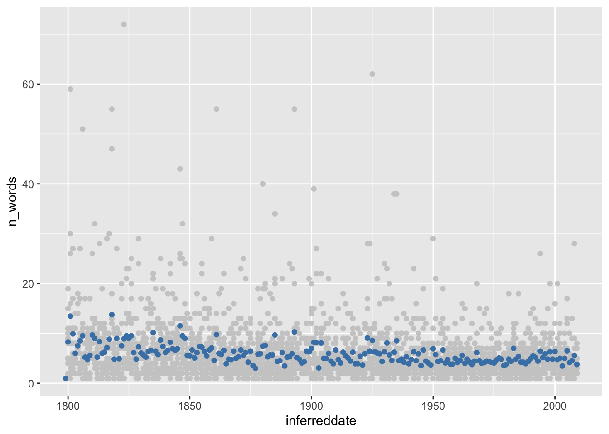
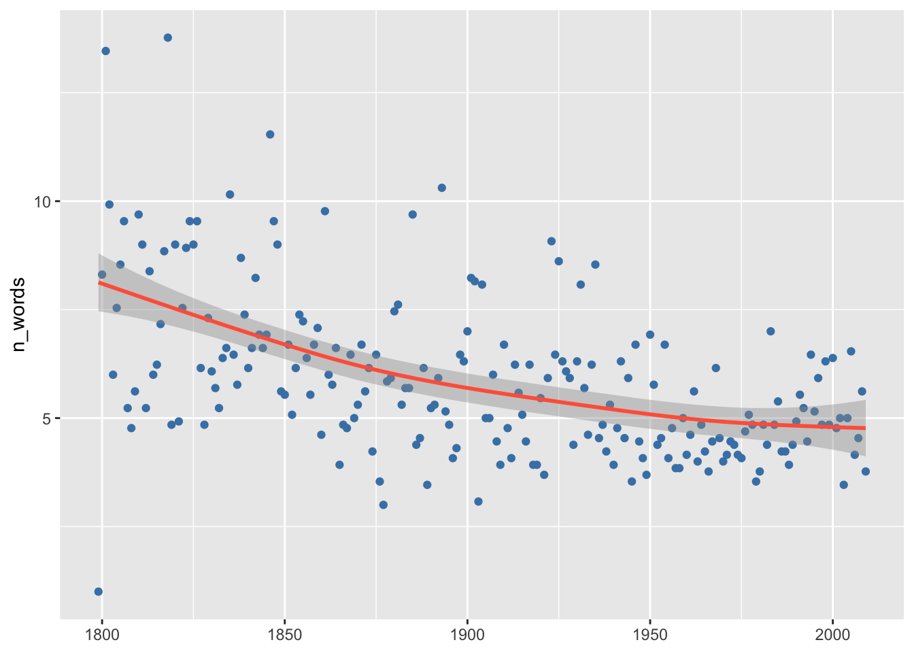
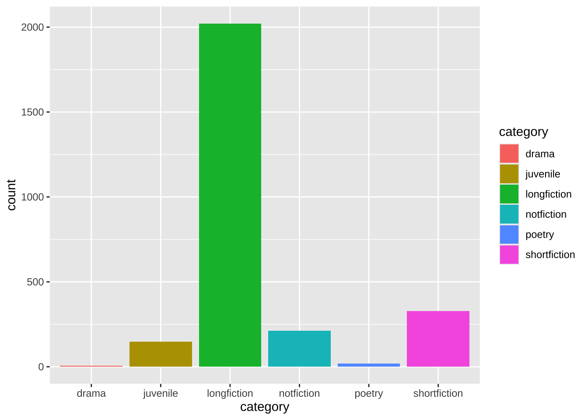
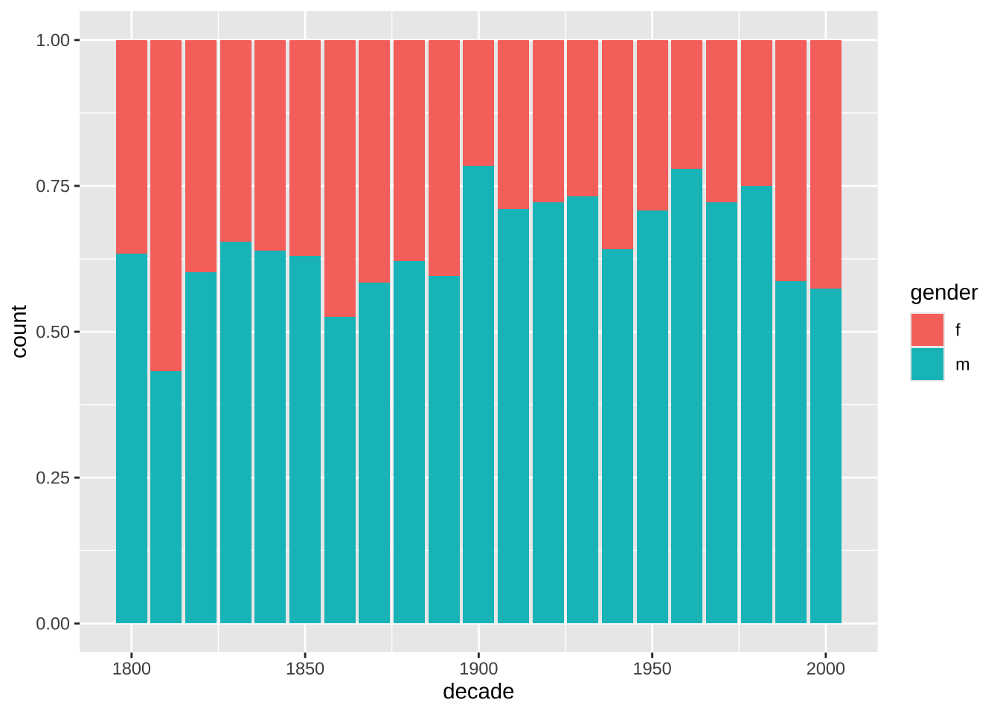
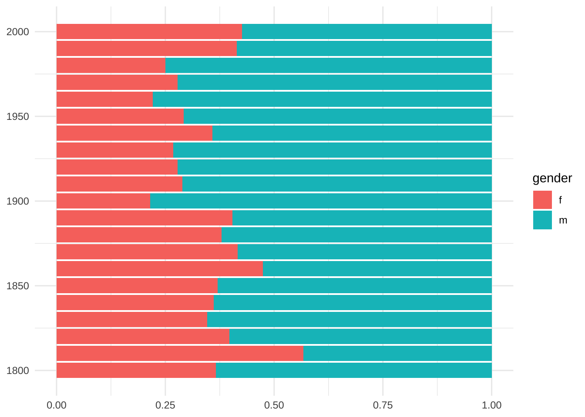

attach(hapax_plato)
plot(hapax ~ words)
Визуализация данных используется на разных этапах количественного исследования: от разведывательного анализа данных до оценки моделей и представления результатов.
Роджер Пенг1 выделяет следующие принципы эффективной визуализации данных:
Задание ниже выполнять не обязательно, но мы рекомендуем это сделать: хотя данные в уроке 1 swirl в основном из области биостатистики, но mutatis mutandis те же принципы применимы к любому количественному исследованию.
NB: Этот курс swirl не позволяет отправлять уведомления о прохождении.
В R существуют три основные системы построения графиков, которые могут быть полезны для достижения разных целей. Базовый R – это самая старая система, и в ее основе лежит концепция палитры художника2.
Идея заключается в том, что у вас есть чистый холст, на который вы добавляете что-то одно за другим: например, сначала вы создаете диаграмму рассеяния с несколькими точками, затем добавляете метки, линию регрессии, заголовки и т.п. Каждая деталь графика занимает еще одну строчку кода.
Это интуитивно понятная модель, потому что часто в самом начале, исследуя данные, мы часто не знаем, какой график мы хотим построить. Обычно мы начинаем это построение с функции plot(), а затем добавляем функции, которые аннотируют график. Вот простой пример на данных о гапаксах у Платона, которые мы видели раньше.
Чтобы построить диаграмму рассеяния (scatter plot), нужно передать функции plot() в качестве аргументов названия тех столбцов, которые мы хотим изобразить по осям x и y. Это можно записать так: plot(x, y). Или так: plot(y ~ x). Знак ~ (тильда) указывает на функцию.
attach(hapax_plato)
plot(hapax ~ words)
Это можно записать и иначе: plot(hapax_plato$hapax ~ hapax_plato$words). Результат будет одинаковый.
Теперь беремся за палитру. Данные скучились в левом нижнем углу и потому плохо читаются. Мы можем пожертвовать двумя очень длинными диалогами (это “Государство” и “Законы”) и сделать zoom in, указав вручную границы осей.
attach(hapax_plato)
plot(hapax ~ words, xlim = c(0, 30000), ylim = c(0, 500)) Но так мы все-таки теряем какую-то информацию – а вдруг она важная? Еще один способ справиться со слипшимися данными – преобразовать их. Применим логарифмическое преобразование. Обратите внимание, как меняются значения на осях.
attach(hapax_plato)
options(scipen=999) # избавляет от научной нотации
plot(words, hapax, log = "xy")
# добавим текст
text(hapax ~ words, labels = dialogue, pos = 2, cex = 0.7)
Уже гораздо интереснее! Попробуем обозначить цветом и формой пересказанные и прямые диалоги. Форма задается внутри функции plot() при помощи атрибута pch. Числовые значения этого атрибута соответствуют следующим значкам. Мы используем 2, 3 и 5.

Перестраиваем наш график.
attach(hapax_plato)
options(scipen=999) # избавляет от научной нотации
plot(words, hapax, log = "xy", col = c("darkblue", "darkgreen", "darkred")[group],
pch = c(2, 3, 5)[group])
text(hapax ~ words, labels = dialogue,
pos = 2, cex = 0.7, col = c("darkblue", "darkgreen", "darkred")[group])
Некоторые названия перекрываютcя (с этим мы научимся бороться позже), но все равно намного понятнее. Теперь можем поменять шрифт и, например, добавить линию регрессии (не хватает легенды, но что-то уже нет сил).
attach(hapax_plato)
options(scipen=999) # избавляет от научной нотации
plot(words, hapax, log = "xy", col = c("darkblue", "darkgreen", "darkred")[group], pch = c(2, 3, 5)[group], family = "serif")
text(hapax ~ words, labels = dialogue,
pos = 2, cex = 0.7, col = c("darkblue", "darkgreen", "darkred")[group], family = "serif")
# добавим линию регрессии
my_lm <- lm(hapax_plato$hapax ~ hapax_plato$words)
abline(my_lm, lty = "dashed", col = "darkgrey", untf = T)
# и заголовок
title(main = "Число гапаксов в зависимости от длины диалога")
При помощи графических параметров3 можно контролировать множество настроек. Но в этом и недостаток базовой графики. Не всем хватает терпения и вкуса этим заниматься, поэтому эта система сейчас не очень употребительна.
Попробуйте интерпретировать график, который у нас получился. Прав ли был профессор Кэмпбелл, утверждая, что высокая доля гапаксов характерна для “поздних” текстов? Исходите из того, что единственный текст, о котором точно известно, что он поздний – это “Законы”.
Судя по графику, количество гапаксов зависит от количества слов в тексте. Чем длиннее текст, тем больше вероятность встретить там редкое слово.
Прежде чем двигаться дальше, проверьте свои знания.

Система Lattice (букв. “Решетка”) была разработана специально для анализа многомерных данных (Sarkar 2008).

Например, мы сравниваем точность классификации текстов в зависимости от длины отрывка и количества слов-предикторов. Это уже три переменные (длина – количество слов – точность). Система решеток, или панелей, позволяет представить такие многомерные данные.

В базовом R тоже можно решить такую задачу, изменив графические параметры:
par(mfrow = c(1,2)) # вот тут указываем число рядов и столбцов
plot(hapax_plato$hapax ~ hapax_plato$words)
plot(hapax_plato$ratio ~ hapax_plato$group)
Но видно, что по умолчанию пространство расходуется неэффективно. Кроме того, к таким графикам сложно создавать заголовки и подзаголовки, подбирать подписи и легенды т.п. Все эти задачи решает Lattice.
Идея этой системы в том, что каждый график строится с помощью одного вызова функции. При этом необходимо сразу указать большое количество информации, чтобы у функции было достаточно данных для построения графика.
library(lattice)
# после вертикальной черты указана переменная,
# которая используется для группировки данных;
# в нашем случае номер группы (по Кэмпбеллу)
xyplot(hapax ~ words | group, data = hapax_plato,
scales=list(x=list(log=10))) # трансформация по одной оси
Недостаток Lattice, однако, в том, что бывает сложно аннотировать отдельные панели, а также приходится сразу задавать весь график в одном вызове функции. Это не всегда удобно. После создания графика уже ничего нельзя добавить или убавить.
Это задание выполнять не обязательно (потому что работать мы будем в основном в ggplot2), но полезно: оно поможет понять графическую идиоматику R.
Для тех, кто все-таки справился с этим уроком – один вопрос. (Если решили его не проходить, попробуйте самостоятельно найти ответ: это тоже важный навык).
Время сделать перерыв, а потом можно двигаться дальше – к самому интересному.
Настоящая графическая сила R – это пакет ggplot2. В его основе лежит идея “грамматики графических элементов” Лиланда Уилкинсона (Мастицкий 2017) (отсюда “gg” в названии), и он объединяет достоинства базовой графики R и Lattice. С одной стороны, вы можете постепенно достраивать график, добавляя элемент за элементом; с другой – множество параметров подбираются автоматически, как в Lattice.
Функция qplot() – рабочая лошадка пакета. Настройки по умолчанию хорошо видно на графике ниже, позже вы научитесь их менять.
library(ggplot2) # часть пакета tidyverse
options(scipen = 999)
qplot(words, hapax, data = hapax_plato, log = "xy")Warning: `qplot()` was deprecated in ggplot2 3.4.0.Функция qplot() – это хотя и рабочая, но старая лошадка. В современных версиях ggplot2 использование функции qplot() не рекомендуется (deprecated), чтобы побудить пользователей изучать ggplot() как более совершенный инструмент. Тем не менее полезно знать, что такое решение есть.
Выше мы построили диаграмму рассеяния, используя логарифмическую трансформацию по двум осям. Можно также выделить цветом различные типы диалогов, изменить размер точек, их прозначность и т.п.
qplot(words, hapax, data = hapax_plato, log = "xy", col = group, size = 1.5) + theme(legend.position = "none")
Диаграмма размаха (о ней подробнее можно посмотреть видео) удобна в тех случаях, когда необходимо представить обобщенную статистическую информацию о распределении значений количественной переменной в разных группах.
attach(hapax_plato)
qplot(group, ratio, data = hapax_plato, geom = "boxplot", color = group)Диаграмму размаха можно совместить с одномерной диаграммой рассеяния. Для этого аргументу geom передаем вектор с названиями геомов.
qplot(group, ratio, data = hapax_plato, geom = c("boxplot", "jitter"), color = group) # вместо color можно использовать shape, который отвечает за форму элементов
Теперь предлагаем немного потренироваться. Пройдите обзорный урок на все графические системы R.
Снова полный коварства вопрос. Проверьте свои знания!
Следующее задание позволит закрепить знания о функции qplot().
И всего один вопрос по этому уроку.
Полурока позади, время сделать паузу и ответить на важнейший вопрос: чай или кофе?
В уроке swirl выше вы имели дело лишь с функцией qplot(). Для более детальной настройки графика рекомендуется использовать функцию ggplot(), которая имеет два основных аргумента: data и aes (англ. aesthetics).
Под “эстетикой” подразумеваются графические атрибуты, такие как размер, форма или цвет. Вы не увидите их на графике, пока не добавите какие-нибудь “геомы” – геометрические объекты (точки, линии, столбики и т.п.). Эти объекты могут слоями накладываться друг на друга (Wickham и Grolemund 2016).
Посмотрим, как это работает, на примере столбиковой диаграммы. Такая диаграмма позволяет представить распределение как количественных, так и качественных переменных.
Для примера возьмем датасет diorisis_meta, который хранит данные о древнегреческих текстах, доступных в репозитории Diorisis4. Можете скачать его из репозитория курса по ссылке. Столбиковая диаграмма позволяет увидеть, тексты каких жанров чаще всего встречаются в этом корпусе.
Подготовим этот датасет для визуализации (пока не надо вникать, что тут происходит – мы вернемся к этому в следующих уроках).
library(tidyverse)
diorisis_count <- diorisis_meta %>%
group_by(genre) %>%
count()
diorisis_countТеперь передадим эти данные функции ggplot…
ggplot(aes(genre, n, fill = genre),
data = diorisis_count)
…И ничего не увидим. Надо добавить геомов! (А также развернем график, чтобы лучше читались подписи).
ggplot(aes(genre, n, fill = genre),
data = diorisis_count) +
geom_bar(stat = "identity") +
coord_flip()
Интересно, а если поменять геомы на точки? Что-то, конечно, получится, но здесь это явно не лучший способ представить данные.
ggplot(aes(genre, n, color = genre),
data = diorisis_count) +
geom_point(show.legend = F) +
coord_flip()
Точечная диаграмма, или dotplot, подходит для тех случаев, когда мы исследуем распределение наблюдений для разных групп данных, причем наблюдений не очень много. Например, мы можем отразить распределение текстов в корпусе по годам. Категориальную переменную (например, жанр) можно дополнительно закодировать цветом (зд. подробнее о том, что можно увидеть на этом графике). Поскольку мы изучаем распределение, считать число наблюдений в каждой группе заранее не надо.
ggplot(aes(date, fill = factor(genre)),
data = diorisis_meta) +
geom_dotplot(binwidth = 10, stackdir = "centerwhole", binpositions = "all") +
#убираем все обозначения по шкале y
scale_y_continuous(NULL, breaks = NULL) +
# добавляем делений на шкале x
scale_x_continuous(breaks = scales::pretty_breaks(n = 10))
Различные группы данных можно выделять не только цветом и формой, но и помещать каждую в свое окошко (facet), как вы это уже делали в Lattice. Попробуем выяснить: сколько поджанров в каждом жанре?
# готовим данные, пока можно не вникать
diorisis_sub <- diorisis_meta %>%
group_by(genre, subgenre) %>%
count %>%
filter(genre %in% c("Poetry", "Technical"))
diorisis_subggplot(aes(reorder(subgenre, n), n, fill = subgenre),
data = diorisis_sub) +
geom_col(show.legend = F) +
# вот здесь задаем группы
facet_wrap(~genre, scales = "free") +
coord_flip()
Выше мы сталкивались с проблемой, что текстовые подписи наезжают друг на друга. Пакет ggrepel позволяет легко с этим справиться.
library(ggrepel)
hapax_plato %>% ggplot(aes(words, hapax, col = group)) +
geom_point(size = 1.2, alpha = 0.7, show.legend = F) +
geom_label_repel(label = dialogue) +
scale_x_log10() +
scale_y_log10() +
theme_bw()
Плиний Старший говорил, что нет такой плохой книги, в которой не найдется ничего полезного. А мы думаем, что нет такого упражнения на кодинг, из которого нельзя извлечь пользы. Особенно если это упражнения на работу с ggplot2 – дальше мы постоянно будем пользоваться этим инструментом.
Правда или ложь?
Пока не расслабляемся, впереди еще один урок swirl.
Правда или ложь?
В качестве дополнительного упражнения вы можете выполнить задание и ответить на вопросы к нему.
Время для самопроверки!
В уроке упоминались различные виды палитр. Проверьте, все ли вы усвоили.
Способы:
ggsave()# код сохранит pdf в рабочую директорию
pdf(file = "Diorisis.pdf")
ggplot(diorisis_sub, aes(reorder(subgenre, n), n, fill = subgenre)) +
geom_col(show.legend = F) +
facet_wrap(~genre, scales = "free") +
coord_flip()
dev.off()Еще один способ сохранить последний график из пакета ggplot2.
ggsave(
filename = "Diorisis.png",
plot = last_plot(),
device = "png",
scale = 1,
width = NA,
height = 500,
units = "px",
dpi = 300
)Не расслабляемся! Еще один вопросик.
# загружаем нужные пакеты
library(languageR)
library(ggplot2)
# загружаем датасет
meta <- oldFrenchMeta
# допишите ваш код ниже
# постройте столбиковую диаграмму,
# показывающую распределение произведений по темам; цветом закодируйте жанр;
# уберите названия осей;
# поверните координатную ось;
# поменяйте тему оформления на черно-белую,
# а шрифт -- на Palatino;
# добавьте заголовок "Plot by [Your Name]"
# экспортируйте график в формате jpg
# с раширением 300 dpi;
# в названии файла должна быть
# ваша фамилия и номер группыИсточник: https://bookdown.org/rdpeng/exdata/principles-of-analytic-graphics.html. Русский пересказ: https://habr.com/ru/companies/skillfactory/articles/536012/. Видео: https://youtu.be/6lOvA_y7p7w?si=se_X6UUEM8sPIGdl↩︎
https://www.rdocumentation.org/packages/graphics/versions/3.6.2/topics/par↩︎
https://figshare.com/articles/dataset/The_Diorisis_Ancient_Greek_Corpus/6187256↩︎